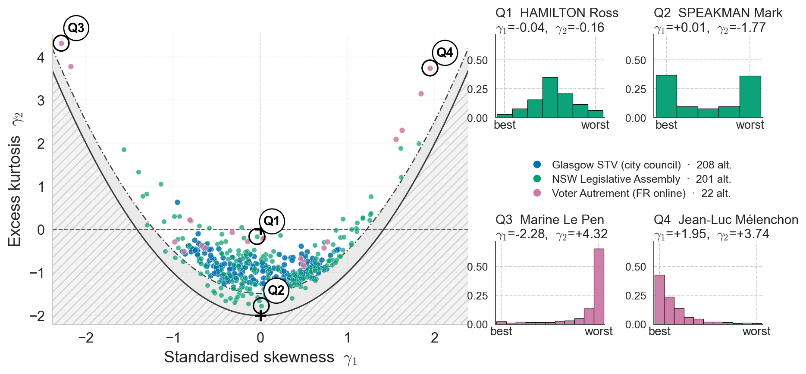
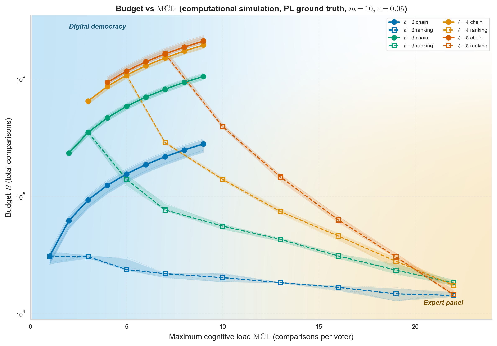

Mohamed Ouaguenouni1, Felipe Garrido-Lucero1, Umberto Grandi1, César Hidalgo2,3,4, Magdalena Tydrichova5
1. IRIT, Université Toulouse Capitole, Toulouse, France
2. Center for Collective Learning, IAST, Toulouse School of Economics, France
3. Center for Collective Learning, CIAS, Corvinus University of Budapest, Hungary
4. AMBS, University of Manchester, UK 5. Centrale Supélec, Paris Saclay, France
The setting
Alternatives, people, and preferences
We have \(m\) alternatives: \(\mathcal A=\{a_1,\ldots,a_m\}\).
a₁a₂a₃⋯aₘ
People can compare them using a binary relation \(\succ\).
\(A\succ B\)means A is better than B for that person.
We model each person’s preferences as a strict, complete, transitive ranking.
Choosing a winner
Gentle Warmup
Computational social choice often asks: which alternative should win?
One way is to give points according to rank.→ Borda score
People’s rankings
A distribution: the profile \(\pi\)
Ranking \(\sigma\)\(\pi(\sigma)\)
1\(a_1\succ a_2\succ\cdots\succ a_m\)\(w_1\)
2\(a_3\succ a_2\succ\cdots\succ a_m\)\(w_2\)
\(\vdots\)
\(n\)\(a_2\succ a_1\succ\cdots\succ a_m\)\(w_s\)
The profile $\pi$ tells us how likely each complete ranking is when we sample a person.
The Borda score
rank 1\(m\)
rank 2\(m-1\)
⋯
rank \(m\)\(1\)
An alternative’s rank distribution tells us how likely it is to be placed first, second, and so on.
The equality is stronger than matching mean and variance
Sample A’s rank from one of the displayed distributions. Conditional on that rank, place the other six alternatives uniformly in the remaining positions.
$Q=\binom m2$ distinct pairs; reverse proportions carry the same information.
For each pair, use $n$ different, independently sampled respondents.
Uniform $k$-subsets include any fixed pair with probability $\rho=\binom k2/Q$; its expected count after $N$ people is $N\rho$.
$N=n/\rho$ only gives the mean count. Random coverage is uneven; stop when the minimum pair count reaches $n$.
Pairwise error $\varepsilon$ implies raw Borda error at most $(m-1)\varepsilon$. A fixed raw-score target would require adjusting the pairwise tolerance as $m$ grows.
Two elicitation protocols
Extending the trade-off to the plurality matrix
Elicitation by k-rankings
Sample a voter and a \(k\)-subset \(S=\{a,b,c,d\}\), \(k=|S|\).
Ask them to rank it.
By transitivity, read the winner of every subset — one observation for each, \(\binom{k}{\ell}\) at degree \(\ell\).
What the hierarchy gives us — and what it leaves open
Conclusion
What we gain
Levels quantify a measure’s information requirements.Divisiveness Zoo
They reveal what a measure can see — and what it may miss.
Levels guide the people–questions trade-off.
Minimal cognitive-load options; generally efficient protocols with sampling guarantees.
What remains limited
Not the full profile — even at degree $m$, in general.
Cross-set dependencies can stay hidden:
$\Pr(a\succ b\ \text{and}\ c\succ d)$.
Whole-matrix bounds can be conservative.
For a fixed measure, fewer people may suffice to:
find the most divisive alternative;
rank alternatives by divisiveness.
A similar trade-off, potentially at a lower sample cost.
The same plane — real elections

Complete-ranking ballots · Glasgow STV · NSW LA · French presidential
Technical branch · real elections
The empirical figure illustrates diversity, not an impossibility result
Observation unit: one candidate in one complete-ranking election.
Rank scales are normalized before comparing datasets with different numbers of alternatives.
Only complete-ranking ballots are retained.
This filter can over-represent more engaged voters.
The figure supports the claim that varied rank-distribution shapes occur in real data. Exact lower-degree indistinguishability is established by the synthetic witness, not by this plot.
The practical question
How much should we ask each person?
The target measure determines a required degree. The interface still has a choice about how to collect it.
λ
Maximum pairwise comparisons asked of one participant
N
Total participants required
Several comparisons with the same participant can reveal higher-degree information.
A chain of simple choices
A chain finds a favorite through simple choices
B→D→A→C
Three comparisons yield one favorite observation for each nested prefix — not a complete ranking.
Reusing a ranking
A ranking answers many subset questions at once
C≻A≻D≻B
4 triple observations from 1 participant — useful reuse, but not four independent voters.
Technical branch · elicitation primitives · 1/2
Query size, target degree, and dependence are different notions
A chain on k alternatives yields the favorite of each nested prefix.
A complete ranking on k alternatives implies the favorite of every subset.
At target degree 3, a ranking of exactly three alternatives and a 3-chain each yield one triple winner.
Reuse appears when a larger ranking covers several triples or several degrees.
Observations derived from one voter are dependent. Sampling guarantees concern repeated observations across appropriately sampled respondents.
Technical branch · elicitation primitives · 2/2
Naive pooling can change what is being estimated
If longer chains are shown only to unusually engaged participants, inferred comparisons from those chains need not represent the same population as short-query answers.
Within voter
Transitivity permits logical reuse.
Across voters
The sampling design must preserve the target population.
The lower-bound scope must match the query model; finding one person’s favorite does not automatically lower-bound every population estimator.
The elicitation frontier — effort and population

Richer answers can reduce the number of participants. Chain ● · ranking ▢
Technical branch · effort and population · 1/2
A fixed entry gets a finite-sample guarantee first